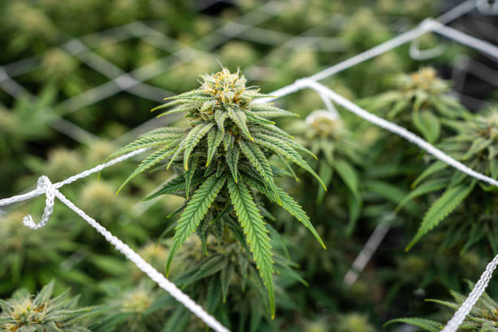

Tips for using cannabis products for recovery and pain management after workouts
Posted by on 2024-05-31
Cannabis products have gained popularity in recent years as a natural alternative for recovery and pain management after intense workouts. Whether you are a seasoned athlete or just starting out on your fitness journey, incorporating cannabis products into your post-workout routine can provide numerous benefits.
One of the most common uses for cannabis products in recovery is its ability to reduce inflammation. After a strenuous workout, muscles can become inflamed, leading to soreness and discomfort. Cannabis contains compounds such as CBD and THC that have anti-inflammatory properties, helping to alleviate muscle soreness and speed up the recovery process.
In addition to reducing inflammation, cannabis products can also help with pain management. Many athletes suffer from chronic pain due to repetitive movements or injuries sustained during physical activity. Using cannabis products can provide relief from this pain without the need for prescription medications that may have unwanted side effects.
When using cannabis products for recovery and pain management, it is important to choose the right product for your needs. There are various options available, including topicals, tinctures, edibles, and capsules. Topical creams and lotions are great for targeting specific areas of soreness, while tinctures and edibles offer a more systemic effect throughout the body.
It is also important to consider the dosage when using cannabis products for recovery. Start with a low dose and gradually increase until you find the right amount that works for you. Remember that everyone's tolerance levels are different, so what works for one person may not work for another.
Overall, incorporating cannabis products into your post-workout routine can be a game-changer in terms of recovery and pain management. By harnessing the natural benefits of cannabis, you can optimize your performance in the gym and get back to doing what you love faster than ever before. So next time you hit the gym, consider reaching for a cannabis product to help you recover and feel your best.